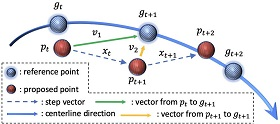
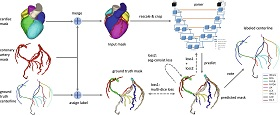
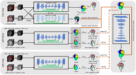

Wenji Wang （王文集）


I'm now a senior research scientist/manager at SenseTime Research (Beijing, China). Before that, I received my M.D. degree in 2019 from Beijing Institue of Technology. I have been focusing on computer vision and medical imaging analysis, espeically in the field of heart for many years. In recent years, I participated in the development of coronary artery intelligent diagnosis software, coronary CT blood flow reserve fraction calculation software, and led the development of electrocardiogram intelligent diagnosis software. A lot of research was carried out From 1D signals like ECG to 2D/3D images such as MR, Ultrasound and CT, and the papers were published in Nature Communications, MIA, TMI, and so on.
News
[2023-11-18] One paper on genome-wide association analysis of left ventricular imaging-derived phenotypes was accepted to NC . [2023-10-10] One paper on joint coronary artery and vein segmentation was accepted to MIA . [2023-09-21] One paper on identification of myocardial scarring was accepted to JMRI . [2021-05-14] One paper on deep reinforcement learning for coronary artery extraction was accepted to MICCAI 2021. [2021-01-16] One paper on few-shot learning for Whole Heart Segmentation was accepted to IEEE TMI. [2020-04-16] Our paper "SenseCare: A Research Platform for Medical Image Informatics" was available on arxiv.
[2019-03-26] One paper on quantification of full Left ventricular metrics was published to IEEE Access . [2018-10-22] We won the First Prize of LVQuan 2018.
[2018-05-17] I started to work as an ML/CV research intern at SenseTime Research (Beijing, China).
Featured Publications
Conference


Segmentation to Label: Automatic Coronary Artery Labeling from Mask Parcellation.
Zhuowei Li, Qing Xia, Wenji Wang, Zhennan Yan, Ruohan Yin, Changjie Pan and Dimitris Metaxas.
The 11th International Workshop on Machine Learning in Medical Imaging (MIML 2020). [PDF]
Zhuowei Li, Qing Xia, Wenji Wang, Zhennan Yan, Ruohan Yin, Changjie Pan and Dimitris Metaxas.
The 11th International Workshop on Machine Learning in Medical Imaging (MIML 2020). [PDF]
Journal

Few-shot Learning by a Cascaded Framework with Shape-constrained Pseudo Label Assessment for Whole Heart Segmentation.
Wenji Wang, Qing Xia, Zhiqiang Hu, Zhennan Yan, Zhuowei Li, Yang Wu, Ning Huang, Yue Gao, Dimitris Metaxas and Shaoting Zhang
IEEE Transactions on Medical Imaging (TMI), 2021, 40(10): 2629-2641.
[PDF]
Wenji Wang, Qing Xia, Zhiqiang Hu, Zhennan Yan, Zhuowei Li, Yang Wu, Ning Huang, Yue Gao, Dimitris Metaxas and Shaoting Zhang
IEEE Transactions on Medical Imaging (TMI), 2021, 40(10): 2629-2641.
[PDF]